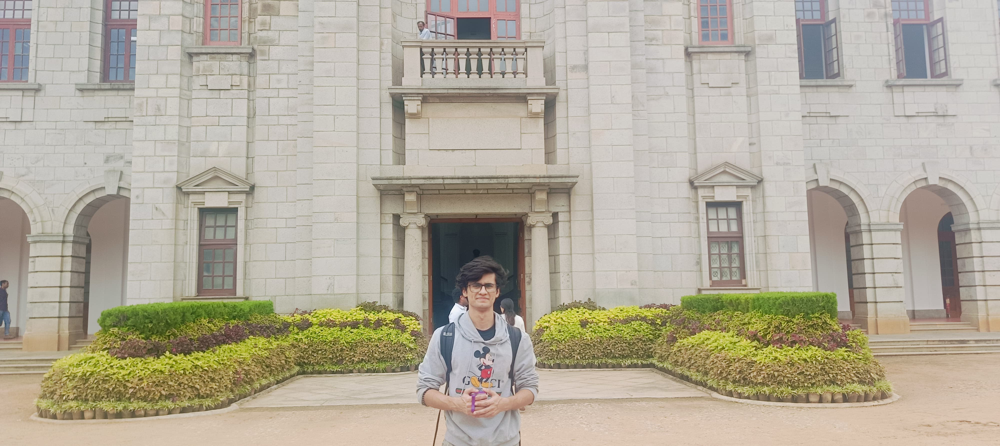

Jayin Khanna
I hold a BSc (Research) in Mathematics from Shiv Nadar Institution of Eminence (Batch Topper, 2026), and I'm concurrently completing an online BS in Data Science from IIT Madras.
I work on interpretability, alignment, and safety in generative models and LLMs — with a mathematical bias toward understanding why methods work before scaling them. My current focus is safety alignment in text-to-image/video diffusion and trustworthiness repair in fine-tuned LLMs.
I'm looking for a long-term research project aimed at publication at ICLR, ICML, NeurIPS, or TMLR.
Current Research
Safety-guided flow matching for T2I/T2V diffusion
Developing a safety-potential-guided rectified flow-matching formulation in CLIP embedding space to reduce harmful generations, benchmarked on the DETONATE dataset against TRCE, CURE, SAEUron, and DoCo.
Post-hoc trustworthiness repair in LLMs
Combining EK-FAC curvature estimation with targeted gradient ascent to mitigate bias, unethical outputs, and toxicity in fine-tuned models — a compute-efficient alternative to retraining or RLHF, evaluated across Qwen2 and Pythia with submodular subset selection for non-redundant repair signals.
Experience
Research Assistant — Deep Representation Learning Lab, IISc Bangalore
- Working on enhancing trustworthiness in fine-tuned LLMs by implementing the EK-FAC preconditioned gradient ascent pipeline for post-hoc bias repair in Qwen2 and Pythia LLMs.
- Evaluating the repair pipeline across multiple model families, integrating submodular subset selection to reduce redundancy in gradient signals.
- Evaluating effectiveness across stereotype, machine ethics, and toxicity dimensions.
Research Intern — IRT Group, AI Institute of South Carolina | DETONATE Group
- Working on safety alignment of Text-to-Image & T2V diffusion and flow matching models using a neurosymbolic approach called scene graphs.
- Developing a safety potential-guided rectified flow matching methodology in the CLIP embedding space to reduce hate content in T2I Diffusion models.
- Benchmarked debiasing and safety methodologies — TRCE, CURE, SAEUron, and DoCo — on the lab's DETONATE dataset.
Machine Learning Research Fellow — SPIRE Lab, IISc Bangalore
- Research on unsupervised speech TSM using Generative Models — VAEs, GANs, Diffusion, and Flow Matching based models.
- Implemented and trained DiffATSM, ScalerGAN, TSM-Net and Neural ATSM from scratch in PyTorch.
- Conducted a comprehensive study of 10 models across 3 methodology classes on 19 experiments.
Deep Learning Research Intern — IIT Kharagpur
- Worked on attribution techniques using Integrated Gradients, Manifold IG, and Guided IG towards neural network interpretability.
- Extending these methods to sequential models and LLMs using Granger causality and Randomized Path Integrals.
Machine Learning Research Intern — DRDO-INMAS, Ministry of Defence
- Developed a CNN ResNet model for classifying sEMG stress measurements, improving accuracy from 91% to 97.98%.
- Currently applying network control theory and GNNs to study cognitive state transitions in the brain.
Statistics Research Intern — University of California Santa Cruz (ISRP)
- Research on Analysis of Time-Varying Quantiles for Environmental Variables — Atmospheric Rivers along the California coast.